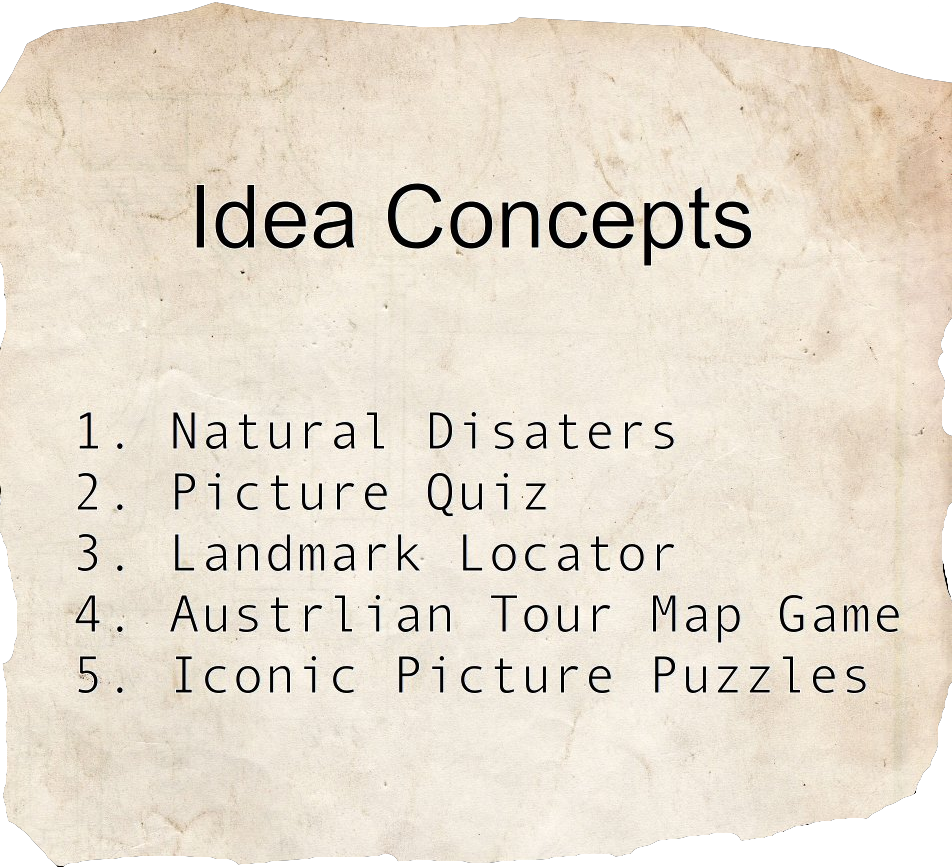

For the duration of semester 2, 2015, in teams, we were tasked to develop a web-based application that presented Trove hosted data in an engaging and interactive manner.
Trove is a web-based portal maintained by the National Library of Australia which hosts and links vast and varying Australian related content. The content is obtained by its own digital archives as well as those from libraries, museums research institutions and other Australian organisations. Books, newspaper articles, photographs, audio and maps are just a few types of data retrievable through Trove.
Therefore the project required the acquisition of specific data through Trove and to display this in a web-application, unlike the existing search paradigm. A successful solution required three key stages and consequently three key deliverables; the Design Proposal, Progress Demonstration and the Final Delivery.
Design Proposal
Breif
The first milestone due in week 5 was a design proposal. This task was aimed to research and ideate a project which would effectively meet all project requirements. We were asked to explore trove and the various data available, to explore exisitng web applications and finally devise our own web-based application to develop over the course of the semester. As assessment for this milestone we delivered a pitch and produced a proposal report .
Ideation
Before deciding upon a topic we each had to individually produce various project ideas, some web-based application that could display troves data in a meaningful way. In the following contact session we split the room into five sections, Games, Puzzles, Utilities, Educational and Other topics and proceeded to brainstorm with other students and conclude on a project topic and consequently a team.
Three of us decided on an Educational Game, the 'Australian Tour' as we called it and used de bono's Six Thinking Hats technique to reaffirm our decision.
Concept
The 'Australian Tour' Game that we decided to pursue was inspired by the infamous pokemon game, in particular the pokemon map. The Australian Tour Game alike pokemon would require a player to move from city to city and complete smaller tasks before they could progress.
These smaller tasks or 'mini-games' were proposed to be various challenges relating to Australian trivia and information from the trove application. Furthermore each challenge would be local to the city or node the player had currently reached.
To allow the perfect contrast between game, and education we decided to aim our web-application towards Junior School Students from years 3 to 7 (ages 8 to 12). The game therefore would be simplistic and interactive; and the mini games, i.e. the trove data would be visual and varying.
Design
To suit our audience the entire web-application was to be simple; the application would begin on a login screen, follow to the game and upon completion display a leader board.
The login screen concept was basically to act as a home screen as well as allow users to login and keep track of their high scores, the main application would appear on the following page, the game page. This is where the user interacts with key strokes and mouse movements to move a player around Australia stopping at various location based nodes. Here they would complete a Trove powered mini-game to unlock that node and increase their total score. The game completes once all nodes are unlocked and the final screen, the leader board screen would display. As with many games we decided to introduce a reward system to increase the competitive nature of the game and consequently engagement of users. The leader board shown at the conclusion will allow users to compare their results with the best and target for a better score.
The project could be broken into three major sections, the game functionality, the back end Trove and php data acquisition for instance retrieving data for the mini-games and retrieving user data for the leader board and finally the styling and graphics of each page and overlays.
I was assigned the game functionality.
Reflection
This milestone project was completed as a team, much of which was completed during the contact and workshop hours. From the start we had a strong idea of how our application would've designed however we did need to tweak and refine some details in particular how the trove data would be used within the mini-games.
In addition to the previously mentioned Proposal report for this milestone we also had to present a poster and a pitch.
Our pitch went well, because we had spent hours discussing and refining our idea we all had a very clear understanding of our concept and were able to portray that through the pitch. Good feedback we received from the pitch was in regard tot eh trove data, in particular that if some of the mini-games were trivia or multiple choice questions, how we would go about using trove to find questions and answers, this is something we took great consideration in the next milestone.
I was very happy with the concept we produced however the one thing that we could have improved on for this milestone was the poster. We spent a lot of time on solidifying our concept, not much time was spent on the poster. The poster was simply a few of our concept images and too much text. I think we could have used less text and more / bigger images would have produced a clearer poster. But this is petty overall as a team we completed this milestone well.